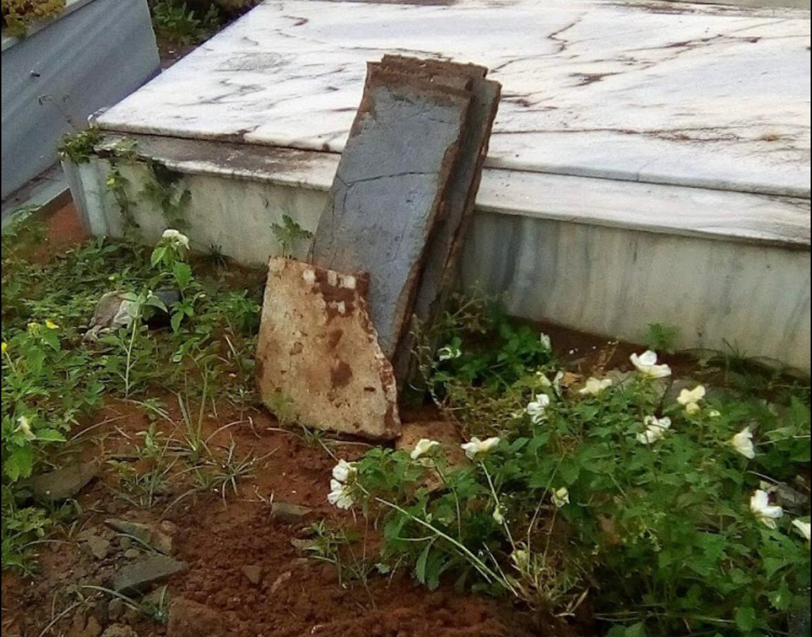

Denúncia 1 - Imagem: Reprodução
Apenas entre os meses de fevereiro a março, o Reclame Cidades registrou cerca de 20 denúncias de diferentes usuários relacionando a falta de limpeza nos cemitérios públicos do bairro da Zona Oeste. Ambos localizados na Rua Bom Pastor, os espaços comportam aproximadamente 400 túmulos cada.
“Desde novembro de 2020 nunca mais vi nenhuma movimentação de limpeza dentro dos cemitérios”, diz uma moradora que circula diariamente nas proximidades. Com uma maior incidência, os natalenses reclamam da alta quantidade de “mato” e lixos espalhados entre os túmulos e também nas travessas.
Em conjunto, as denúncias também indicam que o único problema não é a falta de limpeza. No entorno das duas unidades do cemitério acontecem assaltos constantes por falta de policiamento da guarda municipal, que deixou de fazer suas rondas durante o período da noite. Aliado a isso, as famílias também sofrem com a depredação dos túmulos pro causa dos vandalos que invadem o espaço.
A Prefeitura do Natal, por intermédio da Secretaria de Serviços Urbanos, respondeu que a limpeza das áreas já estão agendadas para a primeira semana de abril. Além disso, o titular da pasta também afirmou que hoje o contigente de servidores não consegue suprir todas as necessidades de imediato, mas que a gestão está se adequando para poder oferecer uma cidade limpa à população.
*Esta é uma publicação teste para o experimento de uma disciplina universitária, e os dados contidos não refletem a realidade.
Denúncia 2 - Imagem: Reprodução
Em março, a plataforma do Reclame Cidade registrou a quantidade de 258 denúncias dedicadas aos anseios da população da cidade do Natal. Foram 205 problemas resolvidos pela administração pública municipal.
As maiores incidências das reclamações dos natalenses aconteceram por questões de infraestrutura ou limpezas. Crateras, falta de limpeza de canteiros ou obras inacabadas são proporcionais a cerca de 89% dessa relação.
Em resposta às demais denúncias que não foram solucionadas, a Prefeitura do Natal afirma que são obras de demandam um maior período de tempo, como a obras de macrodrenagem na Avenida Campos Sales, no bairro de Petrópolis.
*Esta é uma publicação teste para o experimento de uma disciplina universitária, e os dados contidos não refletem a realidade.
 ⠀(84)⠀123456789
⠀(84)⠀123456789 ⠀Demo@gmail.com
⠀Demo@gmail.com